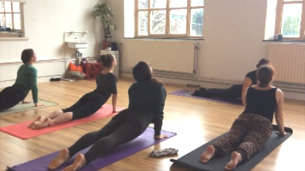

Tijdens yoga combineren we ademhaling met beweging. Als je nieuw bent met yoga dan merk je dat er veel is waarop je moet letten, zoals een juiste houding, focus, spierspanning, ademhaling. Dat is normaal en het went ook heel snel. Als beginnend yogi word je geadviseerd in het begin vooral te letten op de uitvoering van de houding, de ademhaling volgt vanzelf. De lessen hebben een gelijke 'set-up', waardoor je meestal binnen 2-3 lessen de structuur door begint te krijgen. Dan begint de echte yoga, waarbij je onderdeel wordt van de flow die ontstaat tijdens de les.
Het kan voorkomen dat er fysieke correcties zijn. Dit is niet omdat je iets fout doet (het begrip fout hanteren we niet) maar om je te begeleiden naar een veiligere en stabielere houding. Laat me a.u.b weten wanneer je het niet fijn vindt om aangeraakt te worden (waar overigens niets mis mee is)!
De lessen werken op basis van donatie (rond de 3-5€) afhankelijk van je portomonnee en hoe je de les vindt. We werken zonder registratiekosten, je kunt dus gewoon voorbij komen. Er is maximaal plaats voor 10 yogi's, dwz, dat er voor 10 man genoeg ruimte is zonder de andere in zijn ruimte te storen. Dus, om deze reden is het belangrijk om voor 12 u smiddags de dag waarop je wilt komen, je aan te melden. Als je vrienden meebrengt, deze gelieve ook even te melden. Dat kan via mail of WhatsApp: 06-24424270 of via Facebook. Als je wilt, voeg me toe:Devi Kali. Mijn pagina heet: yoga& fusion-style bellydance, daar vind je updates over lessen, evenementen en andere yoga/dans gerelateerde zaken. Let wel dat je eerst de pagina moet 'liken' om updates te ontvangen.
Losse, comfortabele of strakke flexibele kleding wordt geadviseerd (zorg dat leggings niet doorzichtig zijn, of te baggy dat ze naar beneden vallen als je je beweegt :) Meestal word het aan geraden om een strak t-shirt of topje te dragen. Je kunt een meditatie kussentje meenemen of een klein (fleece) dekentje voor tijdens de afsluiting van de les. Als je een yoga-mat hebt, gelieve deze mee te brengen! Er zijn reserve-yogamatjes aanwezig. Uit hygienisch oogpunt is het wel fijner om op den duur je eigen yoga-matje te hebben.
De studio is gelegen in een oud theater gebouw op Hoogfrankrijk 27, in het hartje van Maastricht, een straat achter de Lumiere bioscoop. De grote groene poort opent een kwartier van te voren en sluit een minuut voor les. Zorg dat je op tijd bent anders is er geen toegang tot het gebouw. Sorry voor de laatkomers.
Laat het ons weten als je een blessure hebt of een andere aandoening- welke de moeite van het vermelden waardig is. De lerares/ studio kan geen verantwoording op zich nemen voor eventuele blessures. We vertrouwen op jouw eigen wijsheid en de wijsheid die je hebt van je eigen lichaam. Werkend met ademhaling en lichaamsbewustzijn verlaagd de kans op blessures zodanig dat vinyasa yoga als een van de veiligste beoefeningen bekend staat.
Als je meer vragen hebt, dan horen we het graag!
Namaste